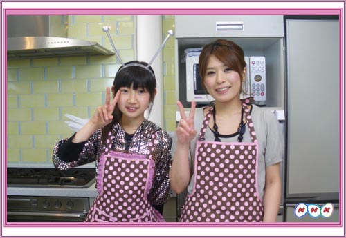

「パラパラ シンプル チャーハン」の作り方

「パラパラ シンプル チャーハン」の作り方
- ◆◆◆材料（一人分）◆◆◆
- ●食 材
ごはん ・ 卵（１コ） ・ しょうが ・ 長ネギ （それぞれ少々） - ●調味料
（ゴマ油・塩・コショウ・とりがらスープのもと・オイスターソース それぞれ少々） - ちなみに、放送のなかでは、みやびちゃんのアイデアでザーサイもいれたよ！
- ◆◆◆作り方◆◆◆
- １．しょうがをみじんぎりにする
- ２．熱したフライパンに、ごま油を大さじ1/2杯いれる。
（サラダ油よりゴマ油のほうが香りがいいから、味も全然ちがう！） - ３．さっき きざんだ しょうがを少々いれる。
- ★お料理星のお料理達人・ＳＨＩＯＲＩ師匠でんじゅ！★
- ★チャーハン作りでむずかしい【 パラパラにする方法 】★
- それは、とき卵を先に作って、ごはんの中に入れ、よ～くかきまぜて
- 「卵かけごはん」みたいにする！（ごはんはさめているほうがいいよ！）
- このままいためちゃっていいか不安だけど大丈夫！
- フライパンで加熱して水分を飛ばすと
- 卵がごはん１粒１粒をくるんでくっつかず、パラッパラッに仕上がる！
- ４．「卵まぜまぜごはん」をフライパンへいれる
- ５．そして最終段階！
- きざんだネギ、塩、コショウをそれぞれ少々、さらに、かくし味として
- とりがらスープの素を大さじ１/２弱
- オイスターソースを小さじ１/２弱入れ
- いためて完成！
- （生中継ではザーサイもいれました）
- ★フライパンからお皿に移すときは、木べらではなく、大きめのスプーンを使うと便利！
みんなもつくってみてね！

Copyright NHK ( Japan Broadcasting Corporation ) All rights reserved.